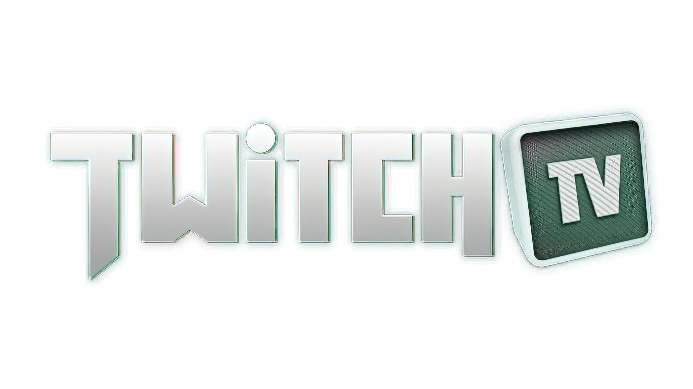

What Is twitch
Twitch is a live streaming platform for gamers and entertainers.
twitch found that gamers could have a home with other gamers on twitch.
Twitch is one of the bigest forms of content for so many people and many people base there cerrear of twitch entertanmant.
History
Twitch was made in 2007 as a streaming platform under the name Justin.Tv created by Justin kan.
Justin.tv showing lots of potentials, by the year 2011. the name changed to Twitch Interactive in 2014 and sold the same year to Amazon for $970 million.
Twitch has recently in 2020, large growth with the fact that people trapped in their house with not too much to do.

Calture
the streaming platform has changed a lot from its origins. still, focus on gamers and entertainers but the world of both has changed so much.
when people watch twitch there looking for someone who is interesting or some who is the best at what they do. like Esports pros, usually, stream playing at the highest rank.
the other half of people are the ones who are looking for a laugh of to be a part of something big or small

Streamers
This are some of the types of Streamers to introduce you to twitch.
- Ziggy
- Eskay
- Ludwig
- Jerma289
- XQC
- Tylorone
- Pokemain
- Trainrex
- Mizkif
- Clintstevens
This is not exact and is just a good starting point for exploring the world of twitch and form your own opinion.
favourite quote
Yesterday is history, tomorrow is a mystory, and today is a gift... that's why it's called the present - Master Oogway